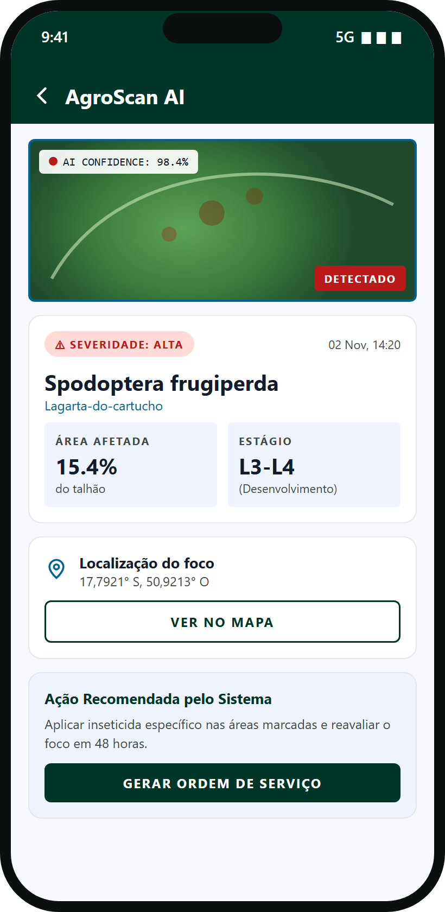
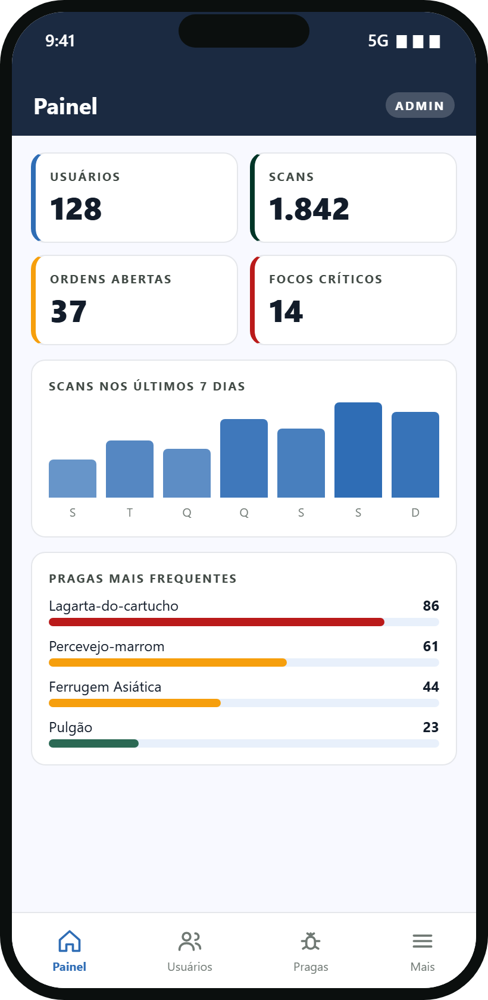

Vistoria a pé
Percorrer cada talhão e anotar à mão consome horas e deixa focos passarem despercebidos.
Monitoramento de pragas com GPS
O AgroScan transforma o celular do produtor em um sensor de campo: fotografe a planta, receba o diagnóstico e veja o foco no mapa, no ponto exato da lavoura.
O problema
Descobrir uma praga cedo e saber exatamente onde ela está é o que separa uma aplicação pontual de um prejuízo na safra.
Percorrer cada talhão e anotar à mão consome horas e deixa focos passarem despercebidos.
Sem saber onde a praga está, a aplicação acaba cobrindo a área inteira em vez de tratar só o foco.
Quando o problema é percebido a olho nu, a perda muitas vezes já começou.
A solução
Aponte a câmera para a folha. O app envia a foto e a posição do aparelho.
O foco entra no mapa de satélite, colorido pela severidade, com uma mancha proporcional à área afetada.
Receba a ação recomendada e gere a ordem de serviço para a aplicação localizada.
Como funciona
Imagens ilustrativas com dados de demonstração.
Cada foto guarda a latitude e a longitude do aparelho. Sem GPS o scan continua, e o app avisa que aquele foco ficou sem localização.
Mapa de satélite com um marcador por foco, colorido pela severidade, e uma mancha de calor cujo tamanho acompanha a área afetada.

Praga, severidade, confiança, área afetada, estágio e a localização do foco, com um botão que leva direto ao mapa.

O administrador tem telas e ações exclusivas: painel com indicadores, gestão de usuários, catálogo de pragas, ordens de todos e registro de auditoria.
Recursos
Foto e localização no mesmo gesto, com ou sem internet para a câmera.
Focos por severidade, manchas de calor e filtro por cultura.
Busca e filtros por severidade para acompanhar a evolução de cada foco.
Da detecção à aplicação: crie ordens e acompanhe o status até a conclusão.
Setores, culturas e saúde da lavoura em um resumo na tela inicial.
Senha com hash, sessão por token e dados separados por usuário.
Quem somos
O AgroScan nasceu como projeto acadêmico: um protótipo funcional, do aplicativo ao servidor.
Protótipo
Aponte a câmera do celular para o QR Code. O app abre direto, em Android ou iPhone, sem instalar nada.
Contato
Quer saber mais, dar feedback ou propor uma parceria? Fale com a gente.